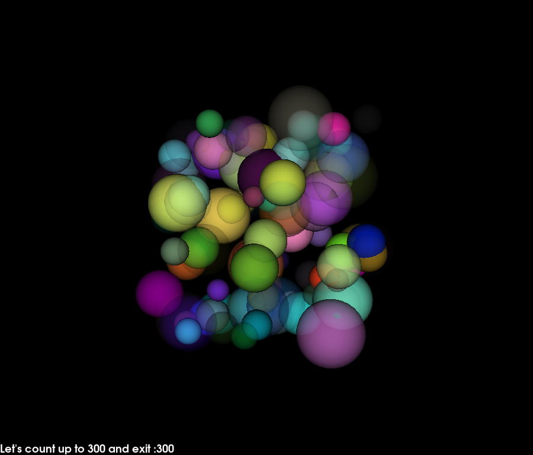

Note
Click here to download the full example code
Using a timer¶
This example shows how to create a simple animation using a timer callback.
We will use a sphere actor that generates many spheres of different colors, radii and opacity. Then we will animate this actor by rotating and changing global opacity levels from inside a user defined callback.
The timer will call this user defined callback every 200 milliseconds. The application will exit after the callback has been called 100 times.
import numpy as np
from fury import window, actor, ui
import itertools
xyz = 10 * np.random.rand(100, 3)
colors = np.random.rand(100, 4)
radii = np.random.rand(100) + 0.5
scene = window.Scene()
sphere_actor = actor.sphere(centers=xyz,
colors=colors,
radii=radii)
scene.add(sphere_actor)
showm = window.ShowManager(scene,
size=(900, 768), reset_camera=False,
order_transparent=True)
showm.initialize()
tb = ui.TextBlock2D(bold=True)
# use itertools to avoid global variables
counter = itertools.count()
def timer_callback(_obj, _event):
cnt = next(counter)
tb.message = "Let's count up to 100 and exit :" + str(cnt)
showm.scene.azimuth(0.05 * cnt)
sphere_actor.GetProperty().SetOpacity(cnt/100.)
showm.render()
if cnt == 100:
showm.exit()
scene.add(tb)
# Run every 200 milliseconds
showm.add_timer_callback(True, 200, timer_callback)
showm.start()
window.record(showm.scene, size=(900, 768), out_path="viz_timer.png")
Total running time of the script: ( 0 minutes 21.913 seconds)